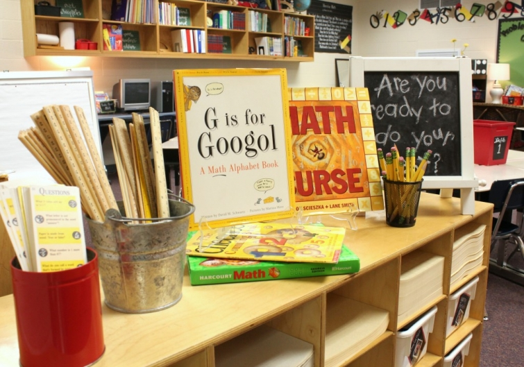
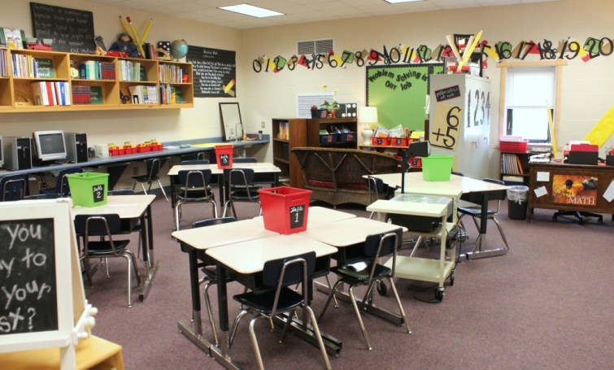

.png)
.PNG)
.PNG)
.PNG)
.PNG)
.PNG)
.JPG)
.JPG)
.PNG)
.PNG)


Welcome to Back to School season! Although our back to school time started here almost a month ago, I think this week is a more traditional time for it in many states.¬†There are so many readers here who work in education (or are retired from education) that I thought it might be fun to devote a few posts at this time in the year to all things school. ¬†Today I wanted to share some classroom decor, but there will be parties and school themed home decorating coming for you later. üôÇ ¬†So come on in…

Since I spent several weeks of the previous summer working to get my classroom (a math room) in shape, I did not change it any for this year. (You can read about the before-and-after by clicking here.)  There have been a large number of requests to see more of the room so this is a bit more detailed view of it.
The wicker loveseat (above) is the coordinating piece to the wicker sofa that currently lives on our back porch.  You can see that the set was a stained natural wicker before I painted it.

The black “chalkboards” are boxes wrapped in black bulletin board paper and written on with chalk. The dolls are my old Holly Hobbie dolls from my childhood dressed in more contemporary clothing than their previous prarie dresses, petticoats, and bonnets. ¬†Did any of you have Holly Hobbie dolls when you were young?
I made the 3-D pencil from an old wrapping paper roll, and all the cutout things around the board were made from art paper found at Michaels and Hobby Lobby. The small folding chair there came from Target, and I spray painted it black. (The bulletin boards are empty because we had not done any “art” projects at the time I took these photos.)
The child’s black chair on top of the storage cabinets came from Pottery Barn Kids (and I painted it.) ¬†And yes, just like in our home, ¬†there are several jars in the room. üôÇ
(You can see I definitely need to refill my candy jar!)
That wooden teacher’s desk sat in a glass doored display cabinet in our school lobby for a long time. ¬†One day they decided they wanted to get rid of it, and I was very lucky to nab it before it was sent out of the building into storage! (Wish I had been fast enough to get the old card catalog from the library before it escaped. üôÅ )
I thought you might also want to see the doorway. ¬†I did tweak it a bit. ¬†Here is last year’s…
And now here is this year’s with the addition of the red “rulers.” ¬†All the teachers on our hallway did the “around the door” thing, so I joined in.
Would you like to see¬†a few¬†more of the classroom doors in our building with “the around the door thing”? (I don’t know what to call it! LOL) ¬†The door from my 3rd grade classroom a couple of years ago is on the left in the next photo, and the same door done by the sweet teacher in there now is on the right. ¬†Her colors are so cheerful!
And here are a few more on our hall.
And while we are on the subject of back to school, let’s talk about gifts for teachers. ¬†Here are a few ideas for some things that teachers would totally love if you wanted to send any of them in with your child for the first day.
Anything to eat is very much appreciated üôÇ These first two include links to recipes for yummy treats, and they have free printables, and the third one has a caramel dip that sounds yummy!
While we don’t really need any more “stuff,” I think anyone would love these cute jars!
Plants or a bouquet of flowers are thoughtful gifts.
These thank you notes are a great (and useful) idea that all teachers can use, and the link has them as free printables. üôÇ
And finally, I think most teachers absolutely love gift cards.  (I know I do!)  So these for Starbucks Рor any coffee shop for that matter- are always fun to get.
That brings us to the end of part 1 for our Back to School posts. ¬†I hope you found an idea or two that you could use as we crank up this new school year. ¬†As always, thank you for stopping by! ¬†I’ll have more back to school goodies coming to you soon. üôÇ
Until next time…


.PNG)
OH MY GOODNESS!!! I’ve never in all my life seen such a darling classroom!!!!! Math was the one subject in school I didn’t like, but I think if I’d been in your class I might have changed my mind. What LUCKY kids!!
xo
———————————————————————
Thank you Tessa! I am so sorry you didn’t like math. I was always such a geek. üôÅ It was science and social studies that were never appealing to me…too much to memorize!
Kelly
Amazing room, the kids must love it. Elementary teachers have all the fun of an “audience” that appreciates the d√©cor. I always loved to do what I could with the cinderblock walls of my high school classroom. And, too, we were restricted by fire codes for what we could do – nothing on hallway walls. Loved what the other teachers had too, that must be one colorfully decorated school. Pinning this on my “Fall” board, hmmm, maybe I should have a teacher board! You’re right about so many going back this week – just finished wishing many friends in several different districts, best wishes for a successful school year. Here’s wishing all the teachers, here, a wonderful year ahead!
———————————————————————–
Our walls are that beautiful cinderblock too, Paula. The fire codes limit creativity quite a bit, don’t they? The kids do enjoy the rooms, but I think they think of it more as “fun” rather than “pretty.” YES you should do a teacher board!
Kelly
I love seeing your classroom. I haven’t taught in many years and I love seeing all of the creativity out there in the classrooms now. I can’t believe you have Holly Hobbie dolls!! I still have 3 HH dolls in a plastic tub in my attic because I just can’t let them go! They are more than 3 feet tall and my mother made them for me for Christmas one year. I even had an accent wall of Holly Hobbie wallpaper and my HH tea set is in my china cabinet today!
——————————————————————–
I think you must be my sister Pat!! Our Holly Hobbie dolls are about 3 feet tall. When I was a little girl, I covered our closet wall, with Holly Hobbie gift wrap, and I also had the HH tea set! That is just too funny!! Do you remember The Betsy Clark line that was out at about the same time? It was “country girls” but they had kind of pointed heads? I loved them too.
Kelly
Thank you so much for sharing the details of your classroom. It is perfect in every detail and so are the rest of your colleagues’ doors. Fun! My daughter taught kindergarten and I always loved helping with her “back to school” decor. Her last name starts with H so she had Mrs. H’s hive with a giant beehive around her door. Her class newsletter was “What’s the buzz” or something cute like that. That was a pre pinterest too:-)
I don’t know if everyone realizes just how much LOVE goes into all that planning and cutting! Your students are fortunate.
——————————————————————–
Love the bee hive theme! I bet the color scheme was yellow and black – love that too! You are so right about how much love goes into all that work. How wonderful that you helped your daughter ready her schoolroom for the year.
Kelly
This is such perfect timing! I posted on my blog today (before I even saw this post!) my Back to School entryway at our house … inspired by you! Love your blog, love your impeccable taste! Zip over for a visit if you have a minute! http://amymacpr.blogspot.com/2014/08/show-and-tell.html
——————————————————————
Thank you for the blog love, Amy! And your tetanus lunch box is to die for – well not actually die…you know what I mean. üôÇ Very cute decorating at your place for back to school!
Kelly
You must have the most darling classroom in the USA. What lucky kids to have such a inspiring learning environment. I am going to post this on my facebook page!!
——————————————————————–
Thank you Cindy, but I am sure it is not. It is just as much fun (maybe even more so!) to decorate a space that children use as it is to decorate a home. Thank you for sharing it on Facebook!
Kelly
Your classroom is just as wonderful as your home!! I love every detail and know that your students must feel so welcome and loved just walking into that space. And all of the “around the door” things are incredible. What a great school!!! xo
———————————————————————
You are too sweet Amanda! Our teachers are all very creative, and we work hard to give both our classrooms and our school a home-like atmosphere. I am glad that you liked it! üôÇ Happy back to school to you!
Kelly
Oh, your students are truly blessed! What a wonderful, wonderful classroom. There really is nothing quite like a clutch of new yellow pencils – sigh. I’ll be passing this on to my sister who finally has her own classroom after moving from room to room during the day and a friends daughter who just graduated from college and is decorating her very first second grade classroom. A very happy school year to you! Marianne
———————————————————————
Thank you for sharing the ideas Marianne. I know your sister and friend’s daughter will be happy to decorate their classrooms. It is such a fun way to start the year! üôÇ
Kelly
Thank you for a “seasonal back to school” posting! Oh how I enjoyed the beginning of each school year. Planning a new theme each year and creating new bulletin boards– thought about it ALL summer!! Loved seeing all your special touches. My 3rd grade teacher’s room so inspired me to want to be a teacher — she had a play store, a Bird Club with hikes and nature crafts, a canary in a cage that sang so sweetly and a huge wasp nest in a tree branch on top of the cabinet!! I can still remember all those things to this day!! As teachers, we never know how we influence those young minds. Thank you once again for sharing your school and looking forward to seeing more inside your special world! Just thinking– that first week of ” teacher tiredness” is a mixture of exhaustion and euphoria! Don’t you agree? After going barefoot — getting used to shoes again!!:)
———————————————————————–
You are more than welcome! Your 3rd grade teacher sounds like she was one in a million. What a great way to teach children to appreciate all that nature has to offer! That first week of teacher tiredness had some euphoria in it (mostly euphoria that we made it through it! LOL) but mostly tiredness here. I go from a lot of sitting at a computer in the summer to running around like crazy and standing for VERY long periods of time at school – so it is both physically and mentally exhausting. I’m getting old!
Kelly
p.s. Hope you found a beach house!
Kelly,
You classroom is adorable as usual! I just love all of the bright colors (especially the green)! I had a Holly Hobby watch growing up. You teacher gift ideas are spot on! I always love those sweet gifts the students bring me. I am exactly one week in now (we started last Thursday). I hope all is going well for you in your school year. Thanks for sharing!
———————————————————————–
Glad you liked it Dawn! I can’t remember seeing a Holly Hobbie watch years ago, but I bet yours was cute. üôÇ Happy back to school to you. Hope your year is off to a great start!
Kelly
Don’t have kids in school anymore…but so enjoyed this post! I used to work in an elementary school, that my kids attended, and have many fond memories! üòâ
———————————————————————
So glad you enjoyed it and that you have fond elementary school memories! There is nothing like the excitement of all the little ones, is there?
Kelly
Kelly, I don’t know who would have more fun in your classroom; you or your students…. It reminds me of visiting a kindergarten teacher friend so she could show me what she had done before school began. She created a huge multidemential apple for the children to walk into/through. All through the year for various seasons and holidays she did this. Sometimes it was tunnels, palaces, forts, even various trees. With the trees the door was the trunk and all around and above it were the
branches, leaves and fruit or blossoms. Her things made Me want
to go to her classes. Yours, too.
I’ll bet you students love coming to school because it is obivious you love what you do.
Blessings to you as you seek to help them on their way.
———————————————————————
Wow, your friend’s doorway sounds amazing!! That would take an incredible amount of energy and time, I know. I used to work with a teacher loooong ago in first grade (who also taught both of our sons) who did something similar. She would have her father come help her “build” her seasonal displays. Everyone loved her! (Now she homeschools her own 6 or 7 children – can’t keep up with how many she has now. LOL)
Thank you for your very sweet comments Joan!
Kelly
Your classroom is wonderful, I love all the happy, joyful and creative touches. It has to make learning a fun job when you get to do it in a place like that.
I really enjoyed seeing the doors…..I just helped my daughter get the door to her kindergarten classroom done with a chicken coop theme. All of her co-workers work hard on a new theme for their back to school doors every year. I always look forward to seeing what great ideas they come up with.
Your gift ideas were great too. Several years ago one of my daughter’s students brought a pretty bucket filled with practical and fun things as an early thank you from her mom on the first day of school. It meant so much to her that she has done that with her children’s teachers. It is easy to forget all the time, sweat, love (and personal money) that teachers give your child. Being appreciated is always nice.
———————————————————————–
A chicken coop! What a creative theme for a classroom! A bucket full of needed items is always a wonderful gift for a teacher to receive.:) I hope your daughter has a great year with her little kindergarteners!
Kelly
Well, I am so not surprised your classroom is as wonderful as your home! Have a great school year, Kelly üôÇ
PS: I just bought another jar, heh.
———————————————————————
Aw you are too sweet Barbara. üôÇ Another jar???? Oh my! Perhaps you will use it for all the gorgeous flowers that are blooming in your yard. (On your blog I saw you were selling some of the bouquets of freshly cut ones. Great idea!)
Kelly
Just the other morning I was in the back yard and heard the all too familiar rumble of the big yellow school bus. We built our home the summer our eldest daughter was five and just starting kindergarten. She’s 32. Sweet memories. Going through your post today was like an “I SPY” book. The wicker sofa (I want) and a wicker lamp too I spotted on the top of the cabinet, your touches of red, pottery barn influence and of course your “signature” jars. Your room truly reflects you Kelly. You are not only an influence to we blog readers, but at the look things with those doors, maybe your fellow teachers as well? The doorways are so welcoming. Thanks for the shares of the teachers gifts. Though a little late for me. My favorites are the yellow ball jar, pencil vase with sunflowers and of course that yummy green apple with dip. I will need to try that dip. I love Heath bars. Well Kelly, may you have a wonderful school year ahead and thanks for stirring good school day memories.
Debra
———————————————————————-
You sneaky thing you Debra! You spied way too much! LOL I work with some very creative folks, but yes some of my patterns did make their way around the hallway at school. Wasn’t that yellow jar super cute? I really need to make a few of those to use around here. (And I want to try out that dip too!)
Thank you for the good wishes for our school year. üôÇ
Kelly
Kelly,
What a great classroom and school. I love elementary school, especially when they are staffed with such caring and creative teachers. Our children went to such a school. I wish I had had some of these back to school gift ideas back in the day.
How clever and fun.
xo,
Karen
——————————————————————–
Thank you Karen. I work with some very hardworking and creative ladies. What in the world did we do back in the day when we did not have Pinterest?! I don’t know how we even survived! LOL
Kelly
This wonderful post makes me wish I could go back in time and have you for math! I might have actually learned something!
I have no young children in my life any more, and I had no idea that classrooms looked so friendly and homey. This is a certainly a vast improvement over the old beat – up rows of desks and a crabby old teacher up front droning on. No wonder I didn’t learn anything in math class!
———————————————————————-
It is very different from the way it was years ago. I haven’t seen rows of desks in a room in an elementary school here in decades. But I do love my old fashioned desk! I don’t want to part with it even for the big new ones that house the computer pieces. üôÇ
Kelly
I am not a teacher, but I love seeing your fun classroom Kelly! I thought about being a teacher for a while when I was in high school. I would’ve loved all that back to school decorating of my door, room, and bulletin boards. But then school would’ve started and all those little eyes would’ve been looking back at me and I would’ve been like,”Okay, what should we do NOW?” Hahahahaha! Is there a job for people who just like to do the decorating part?
You must work in a building full of creative people. All those doors look fantastic!
———————————————————————
Too funny! If there WAS a job like that, I would most definitely apply for it! That would be so much fun. üôÇ
Yes, there are a lot of creative teachers in our school!
Kelly
Hi Kelly, I love your classroom and happy you did a post about it. Your students are lucky to walk in such a cheerful classroom. My daughter is a 3rd grade teacher and I help her with her classroom decorations. Can I ask what you used for your pencil points? Also, I love all the cut outs – scissors, banners, apples, hands, numbers, etc. Does your school have dies for these shapes, or do you cut these out with scissors? I’m always looking for ideas for my daughter’s classroom. The d√©cor above the shelves made me smile, especially the wagon and tricycle. Thanks for sharing!
————————————————————————-
Hi Jackie! How sweet of you to help with classroom decorating. üôÇ The pencil points are simply semi-circles of manila tagboard rolled into a cone with the tip colored black using a marker. Then I glued the cone into the opening of the cylinder that forms the main body of the “pencil.” The shapes are not die cuts. Everything around my door and bulletin board are things I just drew and cut out with scissors – except for the hands. I did purchase a pack of them in a multicolor pack years ago. I also drew the numbers using a ruler to help guide me. I am glad you liked the wagon and tricycle. Those belonged to my children when they were young. The students who come into the classroom for the first time always ask me if they can ride the bike!
Kelly
Golly, Kelly! You must be the best teacher ever! I wish that I had had a math teacher like you. Thanks for sharing your clever ideas. Your gift ideas will work for teachers and lots of other folks as well.~Anne
———————————————————————–
No.. I am not the best teacher ever, Anne. üôÇ We all work very hard, and everyone shares their ideas. I am probably the oldest teacher there though! LOL (and the one with the most years of teaching.) I am glad you liked the gift ideas and can hopefully use them.
Kelly
Oh my goodness Kelly you have the cutest classroom I have ever seen, I just love all of your decorating ideas! Your students, parents and school are so lucky to have a teacher that puts so much effort into creating such a wonderful classroom that is overflowing with creativity! The children must have the biggest smiles when they walk into your class for the first time!
—————————————————————-
Goodness Lauren! Thank you for your very sweet comment. Everyone at our school works to make it a home-y and caring environment for our students, and most spend a lot of their summer vacation to do it. (Which makes our short summer break even shorter!) I do think the children like it, and I know the parents appreciate it. I was a greeter at our school’s Sneak Peek the night before we opened for the first day. I overheard numerous parents saying that they just loved our school – and they were talking with other parents – not staff members. So they do notice. üôÇ
Kelly
Okay, Kelly, I am busy pinning these back to school happies for the teachers. I sent candy along with sharpies to my grands teachers. I added the tag, I hope you have a year of Snickers and joy with your Sharpies! I did a gift bag, adding Snickers and Almond Joys along with a package of Sharpie Markers. I know when I taught preschool, I loved to get little happies from my students. And I love your class room…how different school is today from when I was in school in the Dark Ages.:)
———————————————————————
Thank you for sharing the blog love on your pinterest boards Arlene! I am glad you can use the ideas for teacher gifts. YOUR teacher gift sounds great!! I love Almond Joys, and they are also one of my mother’s favorites. So I would definitely have loved to receive your gift on the first day. üôÇ
Kelly
Your school must be a fun place to work and a happy place for children to learn. I love the decorating. (I had a white wicker rocker in my classroom and loved decorating for “back to school”.) I am always on the lookout for a card catalog and those pull down maps. The teacher gift ideas are fun. I especially like the cookie and succulent. This post ALMOST makes me miss it. LOL! (And, I really mean LOL!)
———————————————————————
I had a white wicker rocker in my dorm room long ago. You and I will probably be fighting over some card catalog we both find. LOL And I am on the lookout for a pull down map too – although I am picky about the colors in it…so it is probably going to be impossible to find one exactly like I want.
Almost made you miss school??? Pinocchio your nose is growing! üôÇ
Kelly
Teacher Kelly: How adorable. Your students and those of your colleagues must feel so blessed to be taught by such imaginative teachers. Just to walk in your class must give your students much incentive to do as well as they can possibly do. How important you all are in the instructive part of their
young lives. I pray that everything your hand sets to do will succeed and prosper in your student’s lives. Blessings!
———————————————————————-
So sweet! Thank you Gail! We do have some imaginative overworked teachers on our staff. Education is not for the faint of heart!
Kelly
Your classroom is the cutest I’ve ever seen, and all of the bridged door decorations are great! It looks like a very happy place to be educated. School started August 4th for us. üôÇ
———————————————————————-
Bridged doors! That’s a great way to describe it. Thanks for the term! It sounds like you weren’t far behind us with your early start. Whatever happened to school starting after Labor Day?
Kelly
I am one of those that has been hoping you would show us your classroom. I knew it would be that cute. Who wouldn’t want to learn in it? Our school started today and I am teaching in a new town. I decorated my classroom with everything letters (I teach high school English), and brought in many things from our home too. You can be sure I will be studying your pictures for ideas I can steal! Thanks for sharing with us. Have a great year. (Sorry you had to start so early!) Lori Lucas
———————————————————————-
I think your letters theme would be perfect for your classroom, Lori. You may steal away any idea you get here. I think teachers are like sponges – soaking up every little idea we can find for our classes. üôÇ Hope you have a wonderful school year!
Kelly